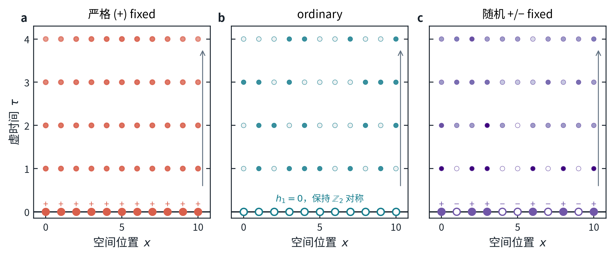
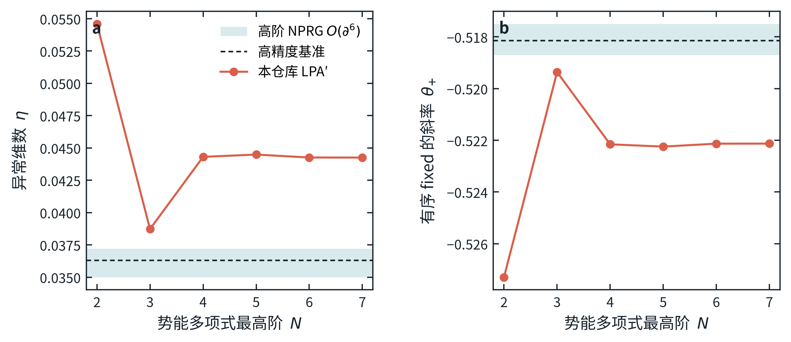
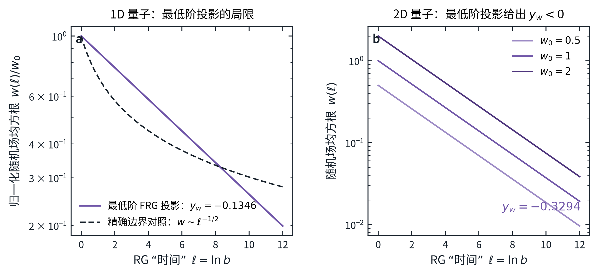
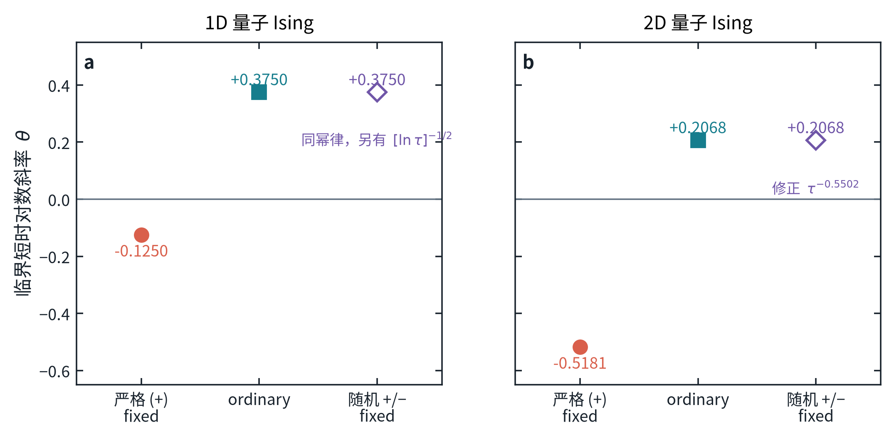
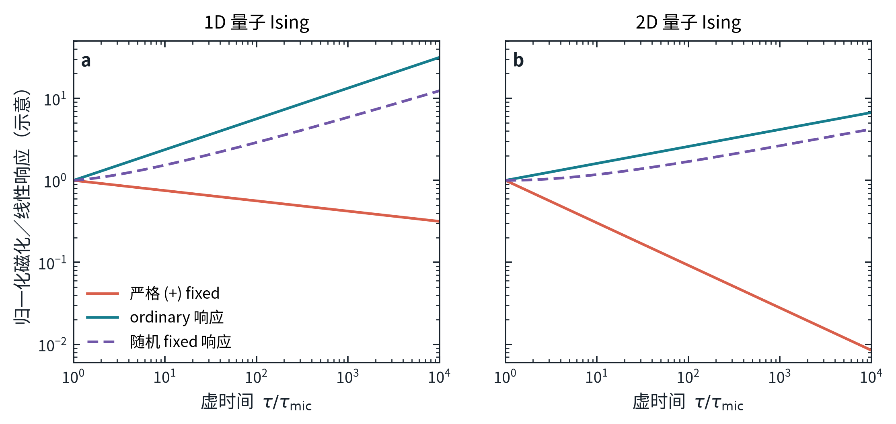

严格 \(+\) fixed
每个 \(\sigma^z\) 都固定为 \(+1\)。这是无穷强同号边界场的有序／normal 边界，不是 ordinary。它在 \(\tau=0\) 已有最大磁化。
Functional renormalization group · Research report
一维与二维横场 Ising 模型的泛函重整化群计算；严格 \(+\) fixed、ordinary， 以及随机 \(+\!/\!-\) fixed 三种虚时间初始边界的统一比较。
在量子临界点，虚时间演化会把初态变成欧几里得路径积分的一条“时间边界”。 因而短时磁化率不是只由体相临界点决定；初态属于哪一种边界固定点同样关键。 本报告从精确 Wetterich 泛函流方程出发，自行数值积分 \(D=2,3\) Ising 的全局 LPA′ 固定点；在半空间上把所得非微扰体相 four-point vertex （有效四点相互作用）代入 ordinary Dirichlet 边界最低维的 \(\mathbb Z_2\)-odd operator （在自旋翻转下变号的算符） \(\mathcal O_1=\partial_n\phi\) 的 one-loop 波函数重整化投影，并另外处理 quenched（随虚时间固定不变的）随机边界场。结果是三个定义不同、不能互换的 短时指数；按下文的对数斜率定义，这些指数可以为正，也可以为负。
上述小数是数值求解值，不等于同等精度的物理预测：边界投影仍是低阶截断。 将边界 vertex 的求值点从势极小值改到原点时，一维量子 ordinary/random 分别变为 \(0.944976/-0.178570\)，二维量子分别变为 \(0.865926/0.089802\)。这组投影漂移是必须公开的系统误差诊断。 作为独立、且不用于校准或替换 FRG 计算的外部对照，二维 Ising 精确值给出 一维量子 \((-1/8,\,3/8,\,3/8)\)；已发表高阶体相 NPRG 与经核验的三维 ordinary 边界数据组合给出二维量子 \((-0.5181(6),\,0.7571(8),\,0.2069(8))\)。
横场量子 Ising 模型在 \(d\) 维空间格点上的哈密顿量写成
\[ H=-J\sum_{\langle i j\rangle}\sigma_i^z\sigma_j^z -h\sum_i\sigma_i^x . \]\(J>0\) 是相邻自旋趋向同向的铁磁耦合；\(h\) 是横向磁场； \(\sigma_i^x\) 与 \(\sigma_i^z\) 是格点 \(i\) 上的 Pauli 矩阵； \(\langle i j\rangle\) 表示最近邻。把 \(h/J\) 调到量子临界值后，从初态 \(|\psi_0\rangle\) 出发的归一化虚时间态为
\[ |\psi(\tau)\rangle = \frac{e^{-\tau H}|\psi_0\rangle} {\sqrt{\langle\psi_0|e^{-2\tau H}|\psi_0\rangle}} , \]其中 \(\tau\ge 0\) 是虚时间。纵向磁化密度定义为
\[ M(\tau)=\frac{1}{L^d}\sum_i \langle\psi(\tau)|\sigma_i^z|\psi(\tau)\rangle , \]\(L\) 是系统线性尺寸。在微观暂态已经结束、而有限尺寸尚未被感知的窗口
\[ \tau_{\rm mic}\ll\tau\ll L^z , \]临界系统呈现幂律。对 Ising 量子临界点，洛伦兹不变性给出动力学指数 \(z=1\)。三种边界必须先定义三个不同的标度量：
\[ Q_+(\tau)=|M_+(\tau)|, \qquad Q_{\rm ord}(\tau)= \left|\frac{\partial M}{\partial a_1}\right|_{a_1=0}, \qquad Q_{\rm rand}(\tau)= \left|\frac{\partial\overline M}{\partial m_0}\right|_{m_0=0}. \]\(a_1\) 是 ordinary 边界短距离展开中最低维 \(\mathbb Z_2\)-odd 边界算符 \(\mathcal O_1\) 的振幅；它不是共轭边界场。 \(m_0=P(+)-P(-)\) 是随机 fixed 符号的平均概率偏置；横线表示对 quenched disorder（在虚时间演化中不随时间改变的随机变量）进行样本平均。 完全对称的 ordinary 边界和零偏置随机集合本身都有 \(M=0\)，因此必须说明 对哪一个小量取系数。对任一已经定义的 \(Q_\alpha\)，本报告采用
\[ \theta_{\alpha,\rm eff}(\tau) =\frac{d\ln Q_\alpha(\tau)}{d\ln\tau}, \qquad \theta_\alpha=\lim_{\rm scaling\ window}\theta_{\alpha,\rm eff}. \]Suzuki–Trotter 分解把 \(d\) 维量子模型映射成 \(D=d+1\) 维经典 Ising 场论；新增的一维正是虚时间。 \(|\psi_0\rangle\) 不在体内重复出现，而只规定 \(\tau=0\) 处的场，因此它是 codimension-one 边界（余维为 1，即边界比体相少一个维度）。长尺度下， 微观上不同的初态会流向少数几类边界 fixed point（固定点）。
每个 \(\sigma^z\) 都固定为 \(+1\)。这是无穷强同号边界场的有序／normal 边界，不是 ordinary。它在 \(\tau=0\) 已有最大磁化。
边界保持 \(\mathbb Z_2\) 自旋翻转对称；连续场论中是 ordinary Dirichlet 固定点。本报告测量其边界算符振幅 \(a_1\) 向体内传播时的 磁化轮廓；若不插入 \(\mathbb Z_2\)-odd operator，平均磁化为零。
每个自旋在 \(\tau=0\) 的路径积分边界上被钉扎，其符号沿空间冻结为 随机变量；\(\tau>0\) 的体相自由积分。这是 quenched 随机场边界； 测量量是对符号概率均值 \(m_0\) 的响应。“fixed”描述每个样本的 时间边界，“随机”描述样本集合。

泛函重整化群（functional renormalization group, FRG）用一个动量尺度 \(k\) 逐层积分涨落。尺度依赖的有效作用量 \(\Gamma_k[\phi]\) 满足精确的 Wetterich 方程
\[ \partial_t\Gamma_k[\phi] =\frac12\,{\rm Tr}\!\left[ \bigl(\Gamma_k^{(2)}[\phi]+R_k\bigr)^{-1} \partial_t R_k\right], \qquad t=\ln(k/\Lambda). \]\(\phi\) 是连续 Ising 序参量场；\(\Gamma_k^{(2)}\) 是对 \(\phi\) 的二阶 泛函导数；\(R_k\) 抑制动量小于 \(k\) 的模式；\(\Lambda\) 是紫外截止。 方程精确但包含无穷多个函数。体相采用 LPA′ 截断
\[ \Gamma_k^{\rm bulk} =\int_{\tau>0}d^D x\left[ \frac{Z_k}{2}(\partial_\mu\phi)^2+U_k(\rho)\right], \qquad \rho=\frac{\phi^2}{2}, \]其中 \(U_k\) 是整个位形依赖的有效势，\(Z_k\) 是波函数重整化。 用优化的 Litim 截止并改写为无量纲势 \(u(\rho)\)，\(N=1\) Ising 流为
\[ \partial_t u=-D u+(D-2+\eta)\rho u' +\mathcal C_D(\eta)\, \frac{1}{1+u'+2\rho u''}, \] \[ \mathcal C_D(\eta)= \frac{(4\pi)^{-D/2}}{\Gamma(D/2)} \left(\frac{2-\eta}{D}+\frac{\eta}{D+2}\right). \]撇号表示对 \(\rho\) 求导；异常维数 \(\eta=-\partial_t\ln Z_k\)。在势极小值 \(\rho=\kappa\) 处， \(u'(\kappa)=0\)、\(\lambda_2=u''(\kappa)\)，LPA′ 投影给出
\[ \eta= \frac{1}{2^{D-2}\pi^{D/2}\Gamma(1+D/2)} \frac{\kappa\lambda_2^2} {(1+2\kappa\lambda_2)^2}. \]为避免 \(D=2\) 时局部 Taylor 级数收敛半径过小，本版的主计算不从文献 抄入全局势，也不把局部多项式外推到原点。固定点大场渐近式为
\[ u(\rho)=\gamma\rho^{p} +\frac{\mathcal C_D} {\gamma p(2p-1)[\,2D-(D-2+\eta)\,]}\rho^{1-p} +\cdots, \qquad p=\frac{D}{D-2+\eta}. \]代码从 \(\rho_{\rm L}\) 向 \(\rho=\varepsilon_\rho\) 反向积分 \(u,u',u''\) 的三阶常微分方程，调节 \(\gamma\) 使原点正则，再用上式 自洽更新 \(\eta\)。本仓库得到
\[ \begin{array}{c|ccc} D & \eta_{\rm global\ LPA'} & \kappa & u''(\kappa)\\ \hline 2 & 0.2335938751 & 0.1975138627 & 8.0798870793\\ 3 & 0.0442723373 & 0.0305927762 & 6.4573959173 \end{array} \]\(D=3\) 另用极小值附近的多项式 \(u=\sum_{n=2}^{N}\lambda_n(\rho-\kappa)^n/n!\) 独立求到 \(N=7\)， 得到 \(\eta=0.0442569371\)，与全局积分相差 \(1.54\times10^{-5}\)。 这验证了数值实现，却不消除 LPA′ 本身缺失场依赖 \(Z_k(\rho)\) 和更高导数 算符的系统误差。

| 经典维数 | 本项目 FRG 默认投影值 | 外部高精度对照 | 解释 |
|---|---|---|---|
| \(D=2\) | \(\eta_{\rm LPA'}=0.2335938751\) | \(\eta=1/4\)（精确） | 精确值只用于评估误差，不校准或替换 FRG 流 |
| \(D=3\) | \(\eta_{\rm LPA'}=0.0442723373\) | \(\eta_{\partial^6}=0.0361(11)\) | 后者是已发表的 NPRG 结果，与本项目计算分开列出 |
数值积分残差和最后几位稳定性只说明“给定截断已达到所报数值精度”， 不说明该截断等于完整理论。以下主表首先报告本项目直接计算的 FRG 结果； 精确、Monte Carlo、bootstrap 或其他论文的 NPRG 数值统一放在 “外部对照”列。
记时间边界自身的维数为 \(s=D-1\)，体相序参量的尺度维数为
\[ \Delta_\phi=\frac{D-2+\eta}{2}. \]ordinary 边界上最低维的 \(\mathbb Z_2\)-odd operator 记为 \(\mathcal O_1\)，其尺度维数 \(x_1=\beta_1/\nu\)。与它共轭的均匀边界场 \(h_1\) 的 RG 本征值不是 \(x_1\)，而是
\[ y_{h_1}=s-x_1. \]一个已经有序的边界在距离 \(\tau\) 处诱导临界 magnetization profile （磁化轮廓） \(M(\tau)\sim\tau^{-\Delta_\phi}\)。由于 \(z=1\)，按定义可正可负的 对数斜率为
\[ \boxed{\theta_+=-\Delta_\phi =-\frac{D-2+\eta}{2}}. \]这就是为什么均匀 \(+\) 初态的曲线下降。把 ordinary 情形的正 \(\theta\) 套用到这里，会混淆两个边界 fixed point。
ordinary 固定点保持 \(\mathbb Z_2\) 对称。在 Dirichlet 极限， 体场接近边界时的边界算符展开（boundary operator expansion）为
\[ \phi(\mathbf x,\tau) =C_{\phi 1}\, \tau^{\,x_1-\Delta_\phi}\mathcal O_1(\mathbf x)+\cdots, \qquad \mathcal O_1\propto\partial_n\phi. \]\(C_{\phi1}\) 是展开系数，\(\partial_n\) 表示朝向体内的法向导数。 若用 \(a_1\) 表示 \(\mathcal O_1\) 的小振幅，则体磁化的对应系数满足
\[ Q_{\rm ord}(\tau)\propto \tau^{(x_1-\Delta_\phi)/z}, \qquad \boxed{\theta_{\rm ord} =\frac{x_1-\Delta_\phi}{z} =\frac{\beta_1/\nu-\beta/\nu}{z}} . \]arXiv:2607.01076v1 在研究“空间物理边界附近的虚时间动力学”时使用了同一个 短距离展开因子 \((\beta_1-\beta)/\nu\)。这里把空间法向换成初始时间边界的 虚时间法向；这支持上式的算符结构，但该论文并没有直接完成本报告的 时间边界 FRG 计算。
在半空间 Dirichlet 传播子上投影 \(\mathcal O_1=\partial_n\phi\) 的 two-point vertex（二点 vertex，即二阶有效关联函数）。本计算保留其 one-loop 表面动量壳贡献，并把其中的 four-point vertex 替换为前节 全局 Wetterich 固定点给出的 \(g_4\)。这个“FRG-improved one-loop 边界投影” 给出边界重整化异常维数
\[ \eta_1^{\rm FRG} =-\frac{3}{24}K_s g_4,\qquad K_s=\frac{2\pi^{s/2}}{\Gamma(s/2)(2\pi)^s}, \qquad g_4=3u''(\kappa). \]系数 \(3=N+2\) 来自 Ising 的单分量收缩。表面壳层测度 \(K_s\) 来自与边界平行的 \(s\) 维动量积分。这个归一化在 \(D=4-\epsilon\) 自动恢复 \(\eta_1=-\epsilon/3+O(\epsilon^2)\)；这一系数未使用三维文献值校准。 但离开 \(D=4\) 后，它并不是完整的场依赖边界 FRG：边界高阶 vertex、 阈值函数的场依赖和更多法向导数算符都被舍弃。因此以下十位数字仅表示 这个明确截断被精确求解，不能当作十位物理精度。 由
\[ \eta_\parallel=2+\eta+\eta_1,\qquad x_1=\frac{D-2+\eta_\parallel}{2} \]得到本项目的默认投影（在势极小值处求值）
\[ \begin{array}{c|ccc} D & \eta_1^{\rm FRG} & x_1^{\rm FRG} & y_{h_1}^{\rm FRG}\\ \hline 2 & -0.9644654762 & 0.6345641994 & 0.3654358006\\ 3 & -0.3853974299 & 1.3294374537 & 0.6705625463 \end{array}. \]把 \(g_4\) 从势极小值改到原点投影，\(D=2\) 的 \(x_1\) 变为 \(1.0617726341\)，\(D=3\) 变为 \(1.3880617527\)。尤其在 \(D=2\)，如此大的漂移明确说明 one-loop 边界截断 尚未定量收敛；它不能用数值求根的十位稳定性来掩盖。
令边界符号 \(s(\mathbf x)=\pm1\) 的概率为 \(P(s=\pm1)=(1\pm m_0)/2\)。\(m_0=0\) 时平均磁化严格为零； \(\theta_{\rm rand}\) 指 \(R_{\rm rand}=\left.\partial\overline M/\partial m_0\right|_0\) 的增长。平均偏置产生的是与 \(\mathcal O_1\) 共轭的均匀场，所以
\[ \boxed{\theta_{\rm rand} =\frac{y_{h_1}-\Delta_\phi}{z}}, \]而不是 \(x_1-\Delta_\phi\)。为计算冻结随机场的平均，引入 \(n\) 套 相同的场 \(\phi_a\)，这些场在英文文献中称为 replicas，最后取 \(n\to0\)。零均值、方差 \(\Delta\) 的 quenched 边界场产生
\[ S_{\partial,\rm rep} =-\bar h_1\sum_a\int d^{D-1}x\,\mathcal O_{1,a} -\frac{\Delta}{2}\sum_{a,b} \int d^{D-1}x\,\mathcal O_{1,a}\mathcal O_{1,b}, \qquad n\to0 . \]边界面积维数记为 \(s=D-1\)。随机场均方根 \(w=\sqrt\Delta\) 与方差 的线性 RG 本征值分别是
\[ y_w=y_{h_1}-\frac{s}{2}, \qquad y_\Delta=2y_{h_1}-s=2y_w . \]本项目的默认 FRG 投影给出 \(D=2\) 的 \(y_w=-0.1345642\)、 \(D=3\) 的 \(y_w=-0.3294375\)。因此在该低阶截断内，两者的随机场振幅 都随 RG 尺度衰减，方差修正指数分别为 \(\omega_{\rm dis}=0.2691284\) 与 \(0.6588749\)。
对精确的二维经典 Ising 边界，\(x_1=y_{h_1}=1/2\)，故 \(y_w=0\)； 随机方差是 marginally irrelevant：它在 RG 流中只缓慢趋于零，并产生 对数修正。把非普适正系数吸收到 \(g\) 中， 二阶 replica RG 流为
\[ \frac{dg}{d\ell}=-g^2,\qquad g(\ell)=\frac{g_0}{1+g_0\ell}, \] \[ \frac{d\ln\bar h_1}{d\ell} =\frac12+\frac{g(\ell)}{2}. \]因而一维量子随机 fixed 的精确边界对照不是纯幂律，而是
\[ \boxed{ R_{\rm rand}(\tau)\sim \tau^{3/8} \left[1+g_0\ln(\tau/\tau_0)\right]^{1/2}}, \] \[ \theta_{\rm eff}(\tau) =\frac38+ \frac{g_0}{2[1+g_0\ln(\tau/\tau_0)]} \longrightarrow \frac38 . \]因此有效斜率从 \(3/8\) 上方缓慢趋近。修正因子的指数 \(+1/2\) 可由 Pleimling 等人原文的 \(h_s(\ell)=h_s e^{\ell/2}[1+\kappa h^2\ell]^{1/2}\) 直接核对；这里把非普适 \(\kappa\) 吸收到 \(g_0\) 中。
对一般 \(y_w<0\)，无序平均量的首个偶于 \(w\) 的修正来自方差，
\[ R_{\rm rand}(\tau)= A\tau^{\theta_{\rm rand}} \left[1+B\tau^{-\omega_{\rm dis}}+\cdots\right], \qquad \boxed{\omega_{\rm dis}=-y_\Delta=-2y_w}. \]两个正指数的差为
\[ \theta_{\rm ord}-\theta_{\rm rand} =x_1-y_{h_1}=2x_1-s. \]所以 \(D=2\) 精确边界的相等只是 \(x_1=s/2\) 的偶然；在 \(D=3\) 无论本仓库 FRG 还是外部高精度数据，都要求 ordinary 与随机 fixed 不同。

| 量子空间维数 | 时间边界／协议 | 默认投影 \(\theta\) | 边界投影区间 | 默认投影下的主导标度 |
|---|---|---|---|---|
| \(d=1\) \(D=2\) 经典 |
严格 \(+\) fixed | \(-0.11679694\) | 不涉及边界 vertex 投影 | \(M\sim\tau^{-0.11679694}\) |
| ordinary | \(0.51776726\) | \([0.517767,\;0.944976]\) | \(Q_{\rm ord}\sim\tau^{0.51776726}\) | |
| 随机 \(+\!/\!-\) fixed | \(0.24863886\) | \([-0.178570,\;0.248639]\) | \(Q_{\rm rand}\sim\tau^{0.24863886} [1+B\tau^{-0.26912840}+\cdots]\) | |
| \(d=2\) \(D=3\) 经典 |
严格 \(+\) fixed | \(-0.52213617\) | 不涉及边界 vertex 投影 | \(M\sim\tau^{-0.52213617}\) |
| ordinary | \(0.80730129\) | \([0.807301,\;0.865926]\) | \(Q_{\rm ord}\sim\tau^{0.80730129}\) | |
| 随机 \(+\!/\!-\) fixed | \(0.14842638\) | \([0.089802,\;0.148426]\) | \(Q_{\rm rand}\sim\tau^{0.14842638} [1+B\tau^{-0.65887491}+\cdots]\) |
“边界投影区间”只是在同一 FRG-improved one-loop 边界截断中，将 \(u''\) 分别投影于势极小值和原点所得的跨度；它不是统计置信区间，也不保证覆盖 完整理论。默认值采用与体相 LPA′ 一致的势极小值投影。小数后很多位用于 复现，不代表物理精度。

| 量子空间维数 | \(\theta_+\) | \(\theta_{\rm ord}\) | \(\theta_{\rm rand}\) | 来源与主导随机修正 |
|---|---|---|---|---|
| \(d=1\) | \(-0.125000\) | \(0.375000\) | \(0.375000\) | 二维 Ising 精确边界；random 另乘 \([1+g_0\ln(\tau/\tau_0)]^{1/2}\) |
| \(d=2\) | \(-0.5181(6)\) | \(0.7571(8)\) | \(0.2069(8)\) | 已发表 \(O(\partial^6)\) 体相 NPRG \(\eta=0.0361(11)\) 与直接核验的 \(x_1=1.2751(6)\)；random 的 \(\omega_{\rm dis}=0.5502(12)\) |
二维量子 ordinary 的对照值按
\[ \theta_{\rm ord} =x_1-\Delta_\phi =1.2751(6)-\frac{1+0.0361(11)}2 =0.7571(8) \]传播独立不确定度。随机 fixed 则使用 \(y_{h_1}=2-x_1=0.7249(6)\)，所以 \(\theta_{\rm rand}=0.7249(6)-0.51805(55)=0.2069(8)\)。 这正是 ordinary 与随机 fixed 的定量差别。

Shu、Yin 与 Yao 的 projector QMC 使用零磁化、零相关长度的对称 disordered product state，并通过 \(C(\tau)=\lim_{M_0\to0}M(\tau)/M_0\) 测量小初始磁化响应，给出一维量子 \(\theta=0.3734(2)\)、二维量子 \(\theta=0.209(4)\)。 该工作没有直接抽样 quenched 随机 \(+\!/\!-\) fixed 时间边界，因此不能 视为本报告随机协议的直接模拟。不过它测量的是同一个 ordinary 固定点的 共轭场本征方向 \(y_{h_1}-\Delta_\phi\)；当随机表面场的振幅在 RG 流中 趋于零、随机 fixed 渐近流向 ordinary 时，可作为 random/bias 主幂次的 间接核对。 它不检验随机边界特有的修正项。数值分别与精确 \(3/8\) 和外部对照 \(0.2069(8)\) 相容。版本 1.0 把这两个 QMC 数误标成 ordinary-profile 基准，本版已更正。
项目由 uv 锁定 Python 环境。以下命令会从大场渐近条件
重新积分两个全局固定点、求边界投影、写出 JSON/CSV、生成 PDF 与
\(320\,{\rm dpi}\) PNG，并渲染本 HTML：
uv sync
uv run python scripts/run_analysis.py
uv run pytest
python -m http.server 8000
然后访问 http://127.0.0.1:8000/show/frg-quantum-ising-initial-slip/。关键产物：
软件环境：Python 3.12；NumPy、SciPy、SymPy、Matplotlib、Pandas 与 Jinja2。
图形同时交付矢量 PDF 和 \(320\,{\rm dpi}\) PNG。随机示意图使用固定种子
\(20260726\)，不参与任何指数估计。报告中的所有小数均可在
results.json 中追溯到“本项目 FRG”或“外部对照”字段。
核对日期：2026-07-26。作者、题名、期刊、卷、页／文章号和 DOI/arXiv 均逐条记录于 reference_audit.json。 外部数值只进入对照区，不进入本仓库 FRG 固定点或边界流。